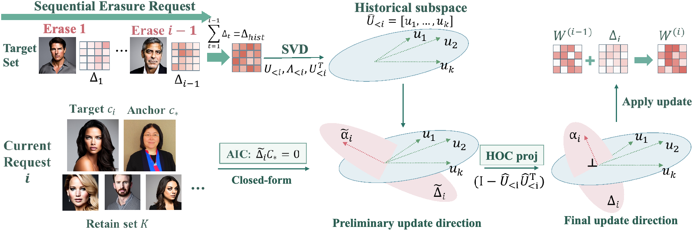
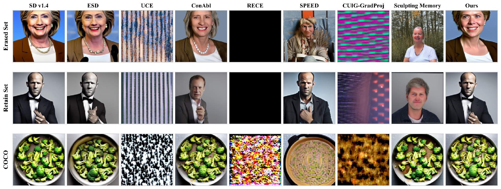

New erasure requests should not damage earlier edits or unrelated generations. CEASE constrains how successive updates interact.
Motivation
Erasure requests arrive over time. A model must remove each new target while preserving unrelated concepts and keeping earlier erasures effective. Applying a method repeatedly is harder than editing a single target: even when each edit protects a retain set, effects outside that set can accumulate.
Key observation
We observe two failure modes under repeated erasure: unrelated scenes lose quality, and some erased targets produce noise instead of the intended generic replacement. Our decomposition identifies two sources of interference: repeated activation of a shared replacement representation and overlap between successive update directions. Protecting a finite retain set at each step does not fully address these sources.
Method
CEASE, Continual Erasure via Adaptive Subspace Editing, adds two complementary subspace constraints to a solver that requires no training. Each constraint targets one source of accumulated interference.
Protect the shared replacement
Include the replacement token representation in the solver's invariance matrix. This prevents later updates from changing the shared anchor used to redirect erased targets.
Separate successive updates
Extract dominant output directions from cumulative past updates. When interference is detected, project the current update away from these directions to reduce overlap with earlier edits.
A decomposition of the accumulated perturbation explains why these two constraints suppress the corresponding sources of interference, connecting the analysis directly to the editing procedure.

Results
Continual erasure sequences for celebrities, artistic styles, and instances.
On style erasure, relative to the strongest prior method reported in the paper.
Across Stable Diffusion v1.4, v1.5, and v2.1, CEASE achieves the most consistent balance between erasure and preservation among the evaluated methods. It keeps general generation stable as edits accumulate and maintains recognizable retained concepts. After 100 celebrity edits, its COCO prompt alignment stays close to the unedited reference while erased celebrities are redirected to coherent generic portraits.

Citation
@misc{wu2026continual,
title={Continual Concept Erasure in Diffusion Models by Suppressing Cross-Edit Interference},
author={Yongliang Wu and Haori Lu and Jinqi Luo and Wei Cao and Xingyu Zhu and Yaoyao Liu},
year={2026},
eprint={2610.01989},
archivePrefix={arXiv},
primaryClass={cs.CV},
url={https://arxiv.org/abs/2610.01989}
}